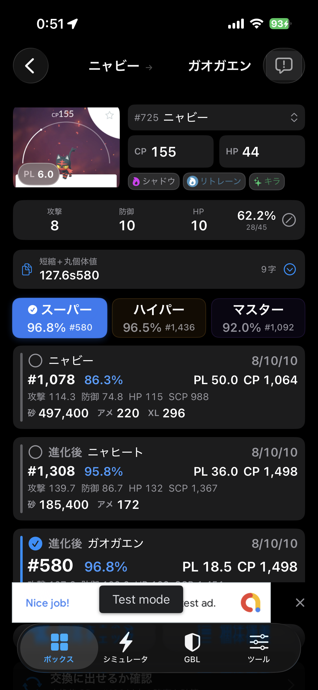
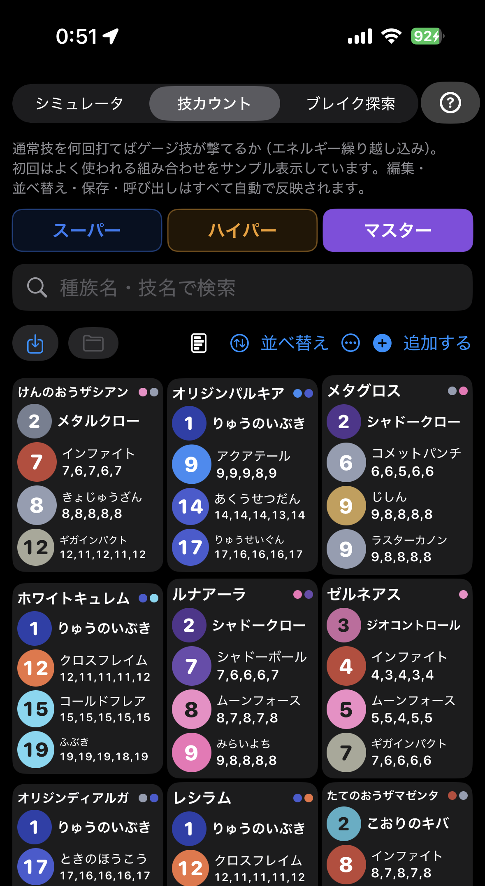
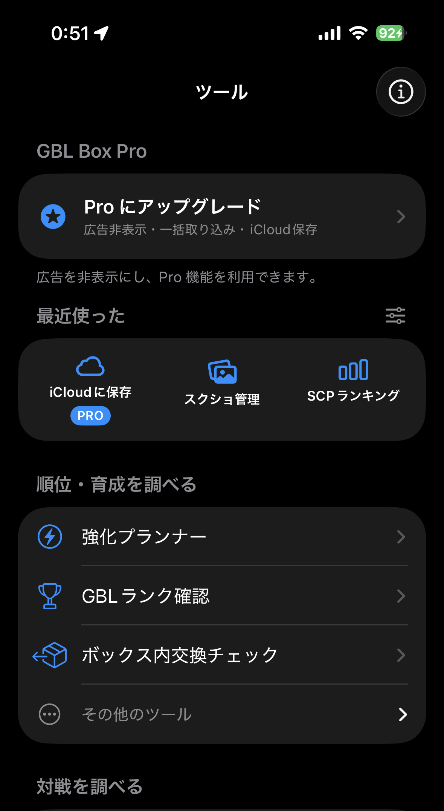
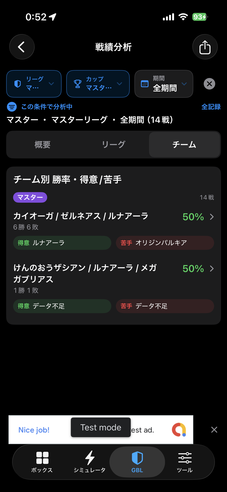

GBL の育成判断
順位だけでは、
対戦は決まらない。
個体値と順位だけなら、他のツールでも出せます。GBLBOX は SCP（総合力）と攻撃・防御・HP の実数値まで、同じ画面に出します。
- 無料
- iPhone
- スクショは端末内で解析

読み取り結果の画面順位1位が、76位に負ける。
同じオーダイル同士、CP はどちらも 1,499。攻撃と防御の実数値が上の 76 位が、シールド 0・1・2 のどれでも勝ちます。4096 通りのうち 185 体が同じ結果です。
スーパーリーグ、シャドークロー＋ハイドロカノン／れいとうビーム。アプリの対戦シミュレータと同じ計算です。双方とも、撃てる中で一番強いゲージ技をすぐ撃ち、シールドは早い順に使う前提。わざと弱い技を撃ってシールドを使わせる駆け引きは含みません。
対戦を決める数字まで、出す。
SCP（総合力）
攻撃・防御・HP を掛けた一つの数。火力と耐久の釣り合いを、リーグごとに見ます。
攻撃・防御・HP の実数値
強化後に実際いくつになるか。何発耐えるかは、％ではなくこの数字で決まります。
到達レベルと到達CP
CP上限のどこまで上げられるか。必要な砂とアメも並びます。
ブレイクポイント
同じ技でも、攻撃の実数値がある値を超えるとダメージが1上がります。その境目に届くのに必要な数値を逆に引けます。
画面で見る GBLBOX



入口は、
スクショ1枚。
ポケモンGO の評価画面をスクショして渡すだけ。あとは進化後まで含めた数字が並びます。
- 共有シートから送る
- まとめて読み取る
- 進化後も評価する
- ボックスに残す
よくある質問
ポケモンGOの個体値をスクショから確認できますか？
はい。評価画面のスクショを読み込むと、個体値、CP、HP、各リーグの順位が出ます。
SCPとは何ですか？
攻撃・防御・HP の実数値を掛けた総合力の指標です。順位が近い個体を比べるときの手がかりになります。
GBLBOXはどのリーグに対応していますか？
スーパー、ハイパー、マスターの順位、1位比、SCP、実数値、進化後の評価。
スクリーンショットの解析は安全ですか？
通常の画像解析は端末内で行い、外部サービスには送信しません。
数字の読み方
次の1枚から、判断を変える。
無料です。まず1体、SCP と実数値まで。
本アプリは Niantic, Inc.、株式会社ポケモン、任天堂株式会社とは一切関係がなく、これらの企業によって承認・後援・提供されているものではありません。「ポケモン」「Pokémon GO」等は各権利者の商標です。ゲーム関連データはコミュニティ提供・公開情報（PvPoke / PokeAPI / PokeMiners / Pokemon GO Hub / GamePress 等）を参考にアプリ内へ同梱しており、通常利用時にこれらの外部API・外部サイトへ通信しません。GBLスケジュール・大会予定は本サイト上のJSONで更新する場合があります。内容は参考値です。